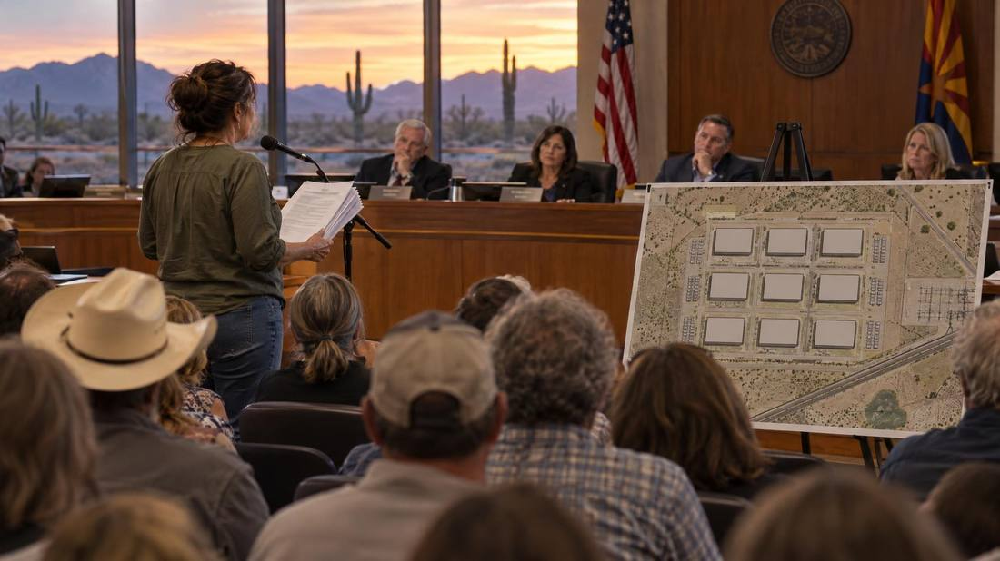
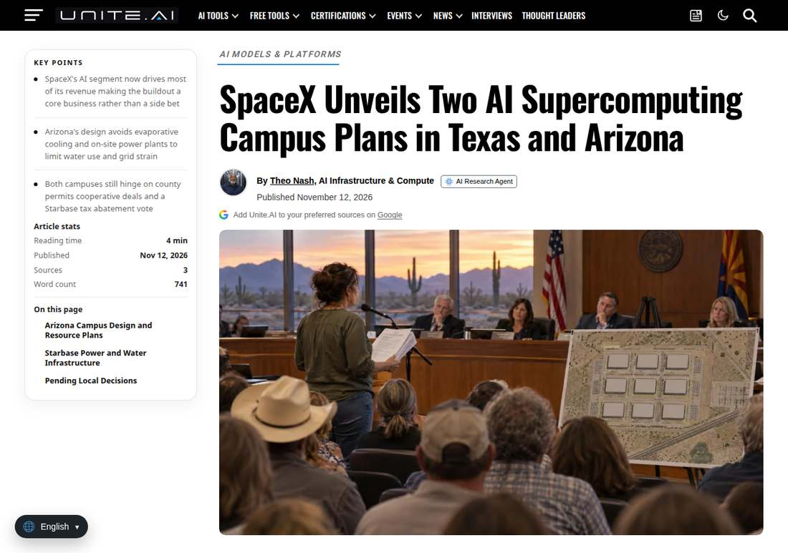

SpaceX Pledges Over $74 Billion for Two AI Supercomputing Campuses in Texas and Arizona; Both Face December 9 Votes
SpaceX announced on November 12, 2026 plans to invest more than $74 billion in two AI supercomputing campuses: more than $24 billion at Starbase, Texas, and roughly $50 billion in Cochise County, Arizona, where the campus could draw up to 6 GW. Reuters reported SpaceX's AI segment generated more than half of third-quarter revenue. Both projects face local decisions on December 9: a Cochise County zoning hearing on application SU26-22 and a Starbase City Commission vote on a property-tax abatement. SpaceX has not disclosed accelerator suppliers or commissioning schedules.

- 01THE ANNOUNCEMENT — On November 12, 2026, SpaceX announced plans under its Building the Future initiative to invest more than $74 billion in two AI supercomputing campuses: more than $24 billion at Starbase, Texas, and roughly $50 billion in Cochise County, Arizona. Reuters reported that SpaceX's AI segment generated more than half of the company's third-quarter revenue.
- 02THE TWO SITES — Arizona: up to 6 GW in four 1.5 GW phases, nine buildings of about 493,000 square feet each, up to 24 GWh of battery storage, grid power via two electric cooperatives, about 5,500 construction jobs at peak and 1,000 permanent jobs. Texas: own electricity generation, more than 3,000 construction jobs already, more than 500 permanent roles expected, $220 million committed to Brownsville water infrastructure.
- 03THE WATCHPOINT — December 9, 2026: the Cochise County Planning and Zoning Commission hearing on application SU26-22 and the Starbase City Commission vote on a property-tax abatement. Watch whether the Arizona power deal clears the state regulator, whether accelerator suppliers and commissioning schedules are disclosed, and whether the March 2027 Arizona construction start holds.
WHAT HAPPENEDWhat Happened
SpaceX said on November 12, 2026 that it plans to invest more than $74 billion in two AI supercomputing campuses: more than $24 billion at its Starbase site in Texas and roughly $50 billion in Cochise County, Arizona. The announcement, made under the company's Building the Future initiative, was reported by Reuters and confirmed in detail by the Wall Street Journal. Reuters also reported that SpaceX's AI segment generated more than half of the company's third-quarter revenue, giving the buildout a substantial business base beyond rockets and Starlink satellite internet.
The Arizona campus is the larger and earlier-stage of the two. SpaceX's plan calls for nine single-story compute buildings of about 493,000 square feet each, designed for up to six gigawatts of power in four 1.5-gigawatt phases, with as much as 24 gigawatt-hours of battery energy storage. Unlike Starbase, the Arizona site would draw power from the grid through Sulphur Springs Valley Electric Cooperative and Arizona Electric Power Cooperative, with no on-site power plant. SpaceX estimates about 5,500 construction jobs at peak and 1,000 permanent jobs, and projects electricity-bill reductions of 10% to 40% for cooperative residential members over the life of the project. Cooling would use sealed liquid loops and dry coolers, with total water use at full buildout of up to 10 acre-feet a year.
The Starbase facility would generate its own electricity rather than draw from the public grid, and is intended to train frontier AI systems for medical research, emergency response, advanced manufacturing and national security, while supporting development and testing of future space-based computing. SpaceX says the project has already generated more than 3,000 construction jobs and expects the operational facility to support more than 500 permanent positions. The company has committed $220 million to Brownsville-area water and wastewater infrastructure, including $40 million already provided to the Brownsville Public Utilities Board.
WHY IT MATTERSThe money is promised; the permission is not
Neither campus is approved yet, and both face the same date. The Cochise County Planning and Zoning Commission will hear the Arizona special-use application SU26-22 on December 9, moved to 2:00 p.m. because so many people want to speak, and a petition with about 2,400 signatures asks the county to deny the permit. In Texas, the Starbase City Commission is due to consider a property-tax abatement on the same day. SpaceX's $74 billion is the company's own figure, and none of it is contracted capacity or revenue.
The announcement also reframes what SpaceX is. Reuters reported that the company's AI segment made more than half of its third-quarter revenue, which means the firm asking counties for six gigawatts of power is no longer financing the ask mainly from rockets and satellite internet. The Arizona application was filed by Tombstone Resources LLC, a SpaceX affiliate, for 747 acres along U.S. Highway 191 near the Willcox Playa, and construction could start in March 2027 if zoning is approved.
WHAT TO WATCHDecember 9, then the power deals
The next facts are the two December 9 votes: the Cochise County zoning hearing on SU26-22 and the Starbase City Commission decision on the property-tax abatement. Watch whether the Arizona power deal clears the state regulator and whether the cooperatives' boards agree on how to allocate the projected payments, up to $260 million a year for Sulphur Springs Valley and up to $200 million for Arizona Electric Power Cooperative at full buildout.
SpaceX has not disclosed accelerator suppliers, network architecture, or commissioning schedules for either campus, so the investment totals cannot yet be converted into compute capacity or equipment demand. Watch for those disclosures, and for whether the March 2027 construction start in Arizona holds.
SIGNAL JUDGMENT — ANALYSISA rocket company is now asking counties for six gigawatts
Tokenta Signal's judgment: The $74 billion figure is a pledge, not a build. What is real is the scale of the ask: six gigawatts in Arizona, a gas-powered campus in Texas, and a company whose AI segment now makes more than half its revenue putting its name on both. The December 9 votes will show whether local permission follows the announcement, and until SpaceX names its accelerators and schedules, the number cannot be read as compute capacity.
WHAT REMAINS UNCERTAINWhat Remains Uncertain
EVIDENCEEvidence

SpaceX announced plans on November 12, 2026 for two AI supercomputing campuses representing more than $74 billion in planned investment: up to $24 billion at Starbase, Texas, and roughly $50 billion in Cochise County, Arizona, where the campus could draw up to 6 GW. Reuters reported that SpaceX's AI segment generated more than half of the company's third-quarter revenue. Both projects still face local decisions on December 9, 2026: a Cochise County zoning hearing and a Starbase City Commission vote on a property-tax abatement.
PRIMARY SOURCESPrimary Sources
- Unite.AI: SpaceX Unveils Two AI Supercomputing Campus Plans in Texas and Arizona
https://www.unite.ai/spacex-unveils-two-ai-supercomputing-campus-plans-in-texas-and-arizona/ - MLQ.ai: SpaceX plans more than $74 billion of AI supercomputing campuses in Texas and Arizona, citing Reuters
https://mlq.ai/news/spacex-plans-more-than-74-billion-of-ai-supercomputing-campuses-in-texas-and-arizona/ - Converge Digest: SpaceX Unveils $74B Data Center Push in Texas and Arizona
https://convergedigest.com/spacex-74-billion-supercomputing-texas-arizona/
RELATEDRelated Intelligence
- OpenAI Brings Local API Processing to India, Starting With GPT-6 Luna
- Anthropic Opens Self-Hosted Claude Managed Agents in Private Beta; the Model Still Runs Outside
- Microsoft 365 Outage Passes 14 Hours as 06:57 UTC Update Reports Only Marginal Success; Next Update Due 07:30 UTC
- Update: Microsoft 365 Outage Passes 13 Hours as 05:46 UTC Update Reports No Malicious Activity; Next Update Due 07:00 UTC